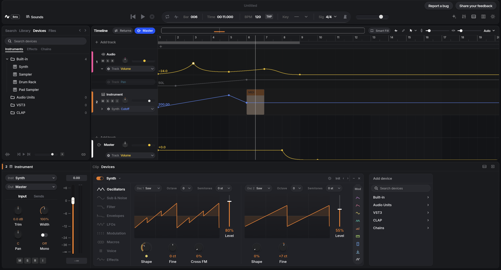

Timeline
Arrange, record and automate.
Clips, waveforms and automation lanes are drawn on the GPU, so the timeline stays at 60 fps with thousands of clips.
Clips, waveforms and automation lanes are drawn on the GPU, so the timeline stays at 60 fps with thousands of clips.
